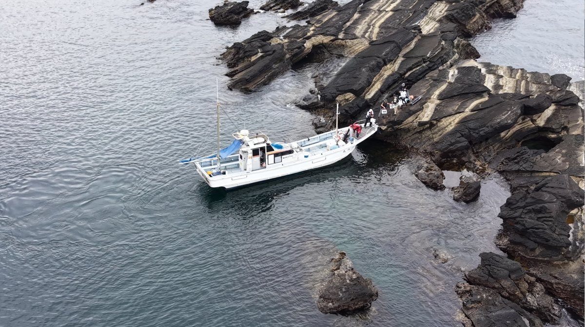
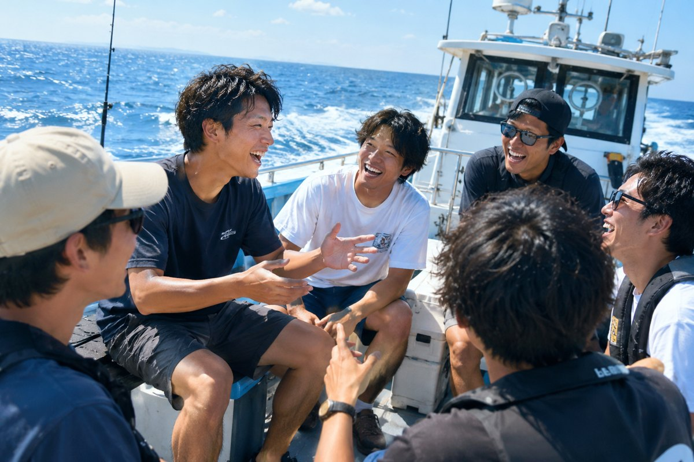
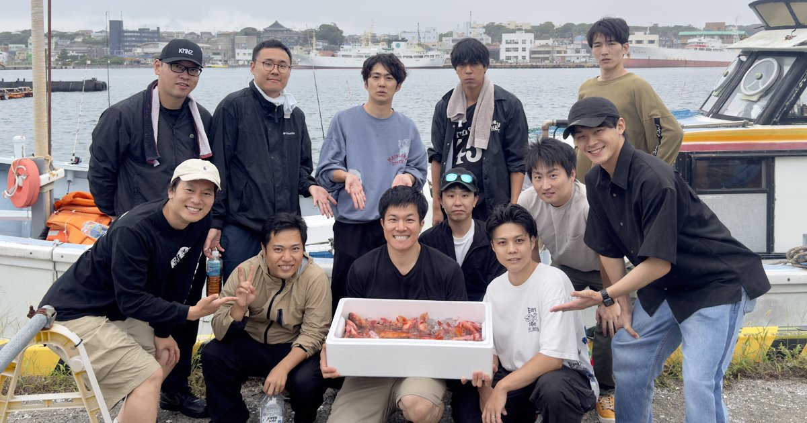
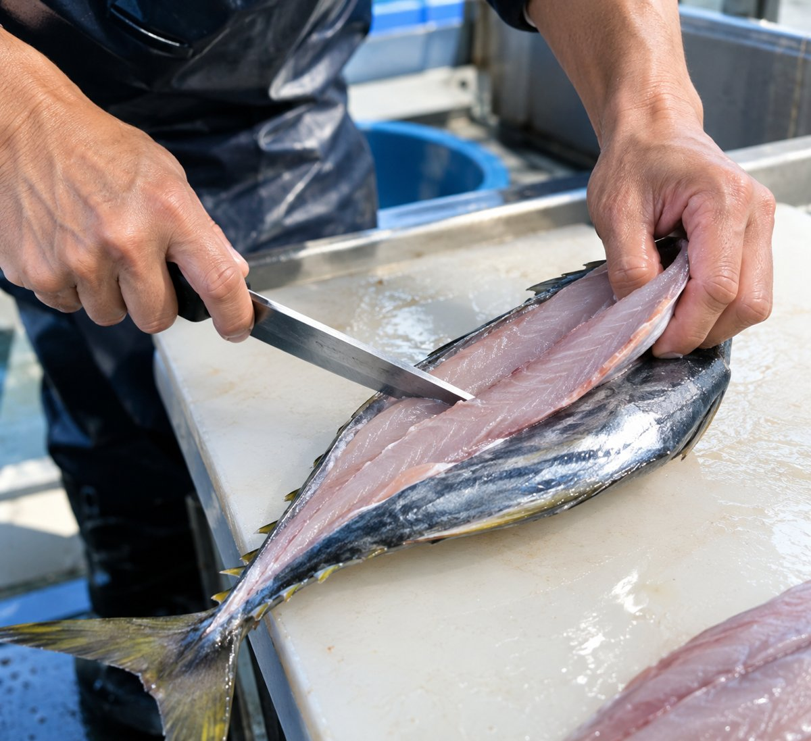

渡船で磯釣りへ
釜島・千鳥島・猪ノ子島など、ポイント豊富な磯へスムーズにお送りします。
WHY IKKYU-MARU

OUR CAPTAINS
釣り船で、『怒鳴られた』『言い方がきつかった』など、そんな経験をされた方もいらっしゃるかもしれません。
一休丸は、お客様から『優しい』『話しやすい』といううれしいお言葉を多くいただいています。わからないことは、どんな小さなことでも気軽に聞いてください。はじめての方も、久しぶりの方も、安心してご乗船いただけます。

釜島・千鳥島・猪ノ子島など、ポイント豊富な磯へスムーズにお送りします。

1隻をグループで貸切。気心の知れた仲間同士で、釣り物も時間も自由に決められます。
※乗り合い船 要相談

道具はレンタルあり。
船長からレクチャー、餌の付け方を丁寧にお教えします。
ご家族連れも安心。

釣った魚の頭・ウロコ・内臓落としを承ります。
NEWS
FISHING REPORT
1号船・3号船・5号船、渡船の最新の釣果をお届けします。
SCHEDULE
ご予約はお電話・LINEにて承ります。
最新の出船・空き状況は、各船へのお電話またはLINEでご確認ください。
ACCESS

CONTACT